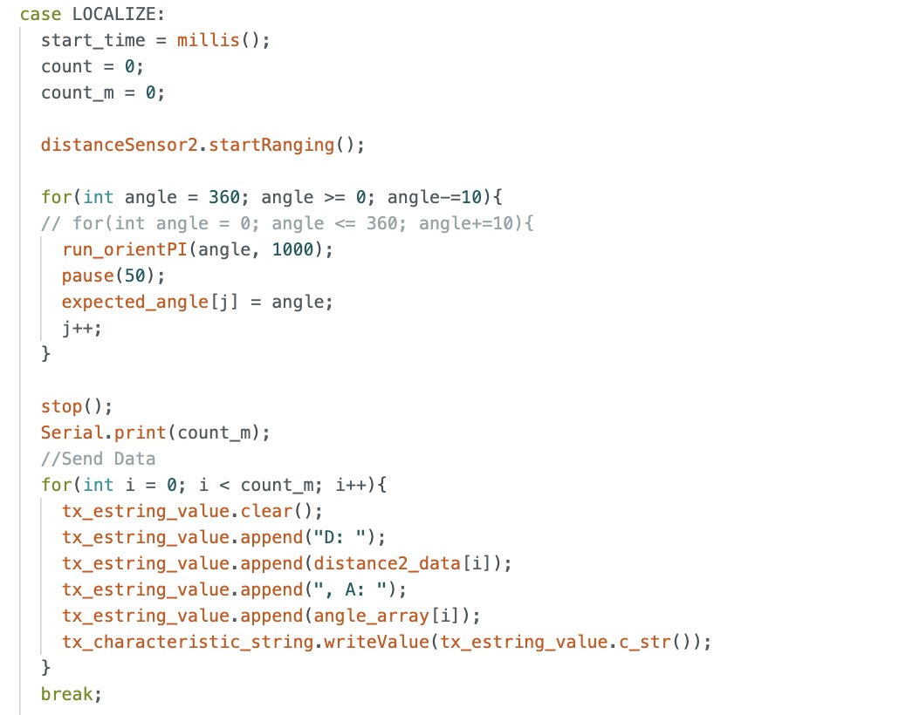

Lab 11: Localization on the Real Robot
In this lab, I implemented localization on my physical robot using a simplified Bayes filter. Due to the large amount of motion noise inherent in low-cost robots, the prediction step is omitted, as it provides little benefit and adds unnecessary computational overhead. Instead, the algorithm relies solely on the update step, which utilizes 360-degree scans from the ToF sensor.
I was provided with Jupyter notebooks containing a working Bayes filter implementation for a virtual robot. My task was to adapt and modify this code to function correctly on my real robots.
Simulation
I tested the localization simulation in the provided lab 11 notebooks from Professor Helbling. The results are shown below. The red is odometry, green is ground truth, and blue is belief.

Implementation
I reused the mapping code from Lab 9 and renamed the command to LOCALIZE. I ensured that my robot rotated counter-clockwise by having my robot start at 360 degrees and turning back to 0, collecting data every 10 degrees (36 data points). I also changed what data I was sending to Python and opted for only ToF distances and angles. 
The number of observations written in world.yaml should match the number data points collected in my Arduino code.
In my perform_observation_loop, I first call my LOCALIZE command to start mapping. Then I call my asynchronous coroutine function sleep_for_3_secs below to wait until my robot finishes the command, completing its 360 turn, and sending the data immediately after.
I edited my notification handler from before to convert my distances from millimeters to meters. This is very important because all the calculations in the provided notebook use SI units.

I run the cells containing the perform_observation_loop function and my notification handler before running the code cell shown below. The code cell below gets my observations, runs the update step of my Bayes algorithm, and plots my beliefs and ground truths. Each time I test a different point in the lab environment, I comment out the code that plots the corresponding ground truth point. The ground truth points in my code are scaled to match the scale of the plots.
Localization Results
The green dots are the ground truths and the blue dots are the beliefs. My top points were more accurate than the bottom points. I struggled with this lab, because although the data mapped very well, the localization was not as accurate as I would like to be. The bottom points were a few squares off. I think this has something to do with the provided code not working well with my real robot as well as motion noise.
(5,3)
(5,-3)
(-3,-2)
(0,3)
References
I referenced pages written by Daria and Mikayla. I also referenced Professor Helbling’s slides.